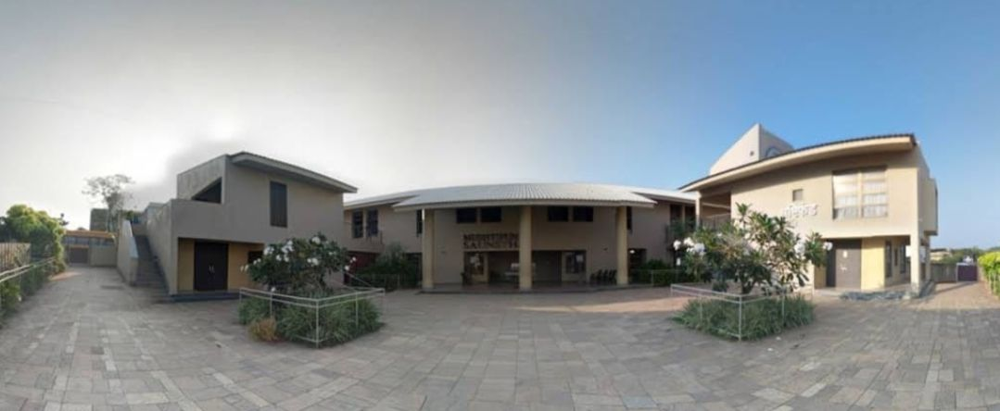
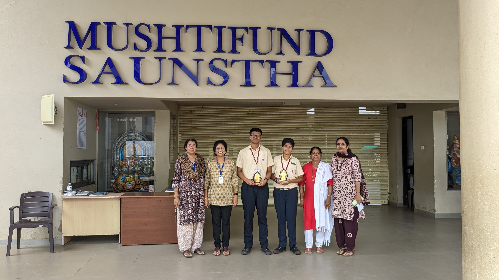

Mushtifund Memories: Reflecting on 6 Years of My High School Journey
 "Talent without hard work is nothing," famously said by the dynamic footballer Cristiano Ronaldo. In my
12-year journey at Mushtifund, six years spent in high school and the remainder in elementary, I truly
grasped the essence of this quote. Starting from a point where I couldn't even hold a phone properly
during a call, with minimal social and tech knowledge, to now, where I've taught myself programming and
become a self-made individual, the transformation has been remarkable. From shedding tears over school
prizes to clinching numerous trophies and titles, and eventually representing my school at
national-level competitions, it all seemed like magic. However, in reality, it was the culmination of
relentless dedication and countless sacrifices.
"Talent without hard work is nothing," famously said by the dynamic footballer Cristiano Ronaldo. In my
12-year journey at Mushtifund, six years spent in high school and the remainder in elementary, I truly
grasped the essence of this quote. Starting from a point where I couldn't even hold a phone properly
during a call, with minimal social and tech knowledge, to now, where I've taught myself programming and
become a self-made individual, the transformation has been remarkable. From shedding tears over school
prizes to clinching numerous trophies and titles, and eventually representing my school at
national-level competitions, it all seemed like magic. However, in reality, it was the culmination of
relentless dedication and countless sacrifices.
Introduction
Hey! This is Aniket Bhatikar, an alumnus of Mushtifund High School from the SSC batch of 2023-24. My
journey at Mushtifund High School was truly amazing. It felt like a second home where I not only gained
knowledge but also learned the values of hard work, perseverance, and discipline. Throughout my six
years at Mushtifund High School, I encountered numerous challenges and experiences that have shaped me
into the person I am today. In this blog, I will share some of the valuable lessons I learned during my
time at Mushtifund High School. I hope you enjoy reading about my journey!
Life before the Pandemic
On June 6, 2018, I entered Mushtifund High School after a memorable sendoff from Mushtifund English
Primary School. The atmosphere was entirely different, filled with diverse students. Back then, I wasn't
particularly fond of studying, often being forced by my parents to do so. However, science was the one
subject that piqued my interest, even though I struggled to excel in it. Whenever teachers assigned
tech-related tasks, like finding information online, I would often panic, making it seem like a huge
challenge – I know this looks very funny!
Moving on to the 6th grade, I found myself completely disengaged from my studies. Relying
heavily on my parents for academic support, I neglected to take my studies seriously, especially before
the first term exam. Despite my father's efforts to prepare me just a day before the exams, the results
were far from satisfactory. While I never failed any exams nor scored satisfactory marks, seeing my
friends excel while I lagged behind left me feeling disheartened. I remember the days when my mother
would scold me for wasting time without engaging in any productive activities, be it studies or
otherwise.
From a young age, I harboured a fascination for design and robotics. Curious about the inner
workings of various machines, I would often dismantle my childhood toys just to satisfy my curiosity – a
decision I now regret.🥲 In 5th grade, I secured 3rd rank in the Magical Science Competition organized
by Mushtifund as part of the M-Factor event. Meeting Sir Jayesh Naik, a well-known science teacher of
our school, during this competition, left a lasting impression on me. Additionally, in 6th grade, I
secured the 2nd rank in a poster designing competition using MS Word, further fueling my sense of
achievement. My innovation idea was selected by my school for Inspire Manak 2019 when I was in sixth
grade, and this achievement filled me with pride.
However, these unpretentious achievements also sowed a sense of egotism in me, contributing to
my poor academic performance. Attending workshops on scratch software and robotics exposed me to new
roads, but my weak understanding of basic math hindered my progress. Unable to grasp fundamental
concepts like division, subtraction, and integers, I faced mockery from my peers including my best
friend, which further alienated me from the world of robotics.
My poor academic performance and indifferent attitude towards my studies disappointed my
parents, who often compared me with other peers even for silly reasons. Even my supposed best friend
proved to be unsupportive, and I found myself surrounded by friends who delighted in picking fights or
teasing me. The lack of a true friend made it difficult for me to share my feelings and struggles😔.
Mathematics emerged as my major weakness, and I often made excuses to avoid homework and
practice. Despite my efforts, I could only manage B or B* grades in the subject. When the pandemic
struck and our 6th-grade final exams were cancelled, I felt relieved. However, my parents, determined to
improve my math skills, insisted I work on the subject during the lockdown. It was during this period
that I underwent a profound transformation.
Lockdown: My Skill-Building Foundation Phase
Despite the lockdown, relaxation wasn't an option for me. My parents persistently prepared me in
mathematics, often resorting to scolding when my answers were wrong.
However, as time progressed, I found myself gradually developing an interest in integers. Through
practice, I began to solve my misconceptions and gain confidence in the subject. Surprisingly, my
parents eventually stepped back from teaching me, leaving me to navigate the increasingly challenging
concepts on my own. As doubts resurfaced, my elder sister Saanvi was very supportive in my journey,
guiding me through the complexities of algebra and strengthening my mathematical foundation.
In the 7th grade, my father created my Google account, opening the door to a world of Google
services like YouTube and Drive. Here, I stumbled upon a recommended video detailing the life of
Cristiano Ronaldo. Inspired by his persistent dedication and determined goal of excellence, I watched
various success stories of celebrities such as Elon Musk, Sundar Pichai, and Sir APJ Abdul Kalam.
Ronaldo's journey, inspired me a lot, prompting me to imitate his principles in my dream of excellence.
Recognizing my limitations in sports, I resolved to channel my energy into acquiring skills like
programming. Thus, I embarked on my programming journey with Scratch, laying the foundation of coding.
Read more about it here later :
From Gamer to Programmer: A Journey of
Innovation and Achievement During COVID-19
To nurture my creativity and design skills, I launched my YouTube channel, "Aniket Bhatikar
Creations," sharpening my skills in video editing, thumbnail design, and content creation. Along the
way, I learned a valuable lesson about the temporary nature of friendships, realizing the importance
of self-reliance and independence. Enrolling in Narayana Online Coaching further enriched my
academic journey, exposing me to the domains of medicine and engineering. In the 7th grade, my passion
for biology ignited dreams of pursuing a career in medicine and becoming a surgeon, following in my
parents' footsteps in the medical field.
By the 8th grade, a reshuffling of classes introduced me to a new social circle, leading to my
old best friend finding a new best friend while reuniting me with old friends and fostering new
friendships. Engaging in collaborative projects like "Chhatrapati - The Great Warrior" significantly
boosted my visibility among senior teachers, marking a pivotal moment in my academic journey. Our
project on the Dual Battery Solar-Powered Charging System garnered recognition from the ATL Goa
Committee, earning us a showcase at SCI-FFI 2022. Additionally, I achieved commendable ranks (placing in
the top 15) in state-level Olympiads such as STSE and GTSE, showcasing my dedication and relentless
pursuit of excellence.
With daily practice and unwavering consistency, I conquered my fear of mathematics, transforming
it into a source of strength and confidence. Robotics and programming, once challenging, now felt within
reach as I embraced the logic and creativity in these fields. By designing banners, posters, and
multimedia content, I expanded my creative horizons, culminating in my first-ever academic achievement
as I topped my class at the end of the 8th-grade academic year. This milestone affirmed my belief in the
power of dedication and perseverance, paving the way for a future defined by endless possibilities. I
experienced that with your dedication and willpower, no one can stop you from turning your ideas into
reality!
Life After Lockdown: A New Subtopic
The year 2022 marked a significant change as we returned to offline schooling after two years of
pandemic-induced disruptions. The initial days of 9th grade were challenging, with a considerable amount
of schoolwork to catch up on after the vast break. However, among the adjustments, an exciting
opportunity arose in October when Jayesh Sir, recognizing my experience in robotics and innovation,
assigned me to work on an innovation project for the Western India Science Fair 2022-23.
This project not only allowed me to explore deeper into my passion for robotics but also
introduced me to a like-minded individual, Samihan, a fellow tech enthusiast who soon became a close
friend and teammate for the competition. Collaborating with Samihan and his father, I gained
incalculable technical knowledge and skills that significantly enhanced my understanding of robotics.
Here I learnt a lot about Arduino programming, sensors, recalled the concepts of basic electronics and
many more skills.
Our hard work paid off when we were qualified to represent Goa at the Nationals, a proud moment
not just for us but also for Mushtifund High School, marking the school's 7th-time qualification under
Jayesh Sir's guidance. Meanwhile, I also had the privilege of being part of our school team for the All
Goa History Quiz, where we secured 2nd place at the state level. Winning my first trophy for
representing the school was truly a dream come true moment!
In addition to these achievements, I joined Team LegoGoaAxi0m, a team preparing for FTC (First
Tech Challenge). This experience exposed me to a wide range of skills, including outreach, designing,
robot framework, and public speaking, further enriching my learning journey.
As the year 2022 came to a close, I glanced at how it had exceeded my expectations, not only in
terms of academic and technical knowledge but also in terms of personal satisfaction and fulfilment. It
was a year of growth, learning, and memorable achievements that laid the foundation for an exciting
future ahead.
I also conducted a Basic Electronics and Robotics workshop in my School as an outreach for the
FTC. Read more about it here:
Exploring the wonders: A journey through Basic Electronics and
Robotics workshop in Mushtifund High School
I've learned that "listening quietly, like a silent lion, is far more beneficial than
boasting loudly, like a barking dog. Surrounding yourself with individuals who surpass you offers
the opportunity to learn and grow exponentially."
Year 2023: A Traveler's Year
The year 2023 marked a significant phase of exploration and self-discovery for me. As the world
gradually emerged from the shadows of the pandemic, I found myself facing new challenges and
opportunities.
I also conducted a Codeavour awareness session at Progress High School, Panaji as a part of FTC
outreach activity. I participated twice in Codeavour, once in 2021-22 and again in 2022-23. Although I
didn't win any prizes, for the 2022-23 season, I was awarded a scholarship to participate as a
recognition of my past commitment to robotics. Read more about the workshop here:
Spreading the Knowledge: Codeavour awarness session at Progress High
School, Panaji
Following the pandemic, some of my peers' parents began comparing their children to me, which
fostered a sense of resentment among them. Consequently, I felt disconnected from my classmates.
However, amidst this isolation, I found ease in my new best friend, who listened to my thoughts and
offered valuable advice.
One of the defining moments of the year was my participation in the Nationals of the Western
India Science Fair at Nehru Science Centre, Worli-Mumbai. It was my trip outside of Goa after six years
and my first journey without my family, exclusively for a competition. Although the event was
non-competitive, it was a remarkable experience to interact with participants from across the country
and showcase our innovation.
Upon returning to Goa, I immersed myself in FTC (First Tech Challenge) preparations, dedicating
most of my time to co-curricular activities like quizzing, programming, and FTC. Despite facing
criticism from teachers for my average test scores, I remained dedicated to my commitment to FTC,
recognizing the importance of fulfilling my responsibilities.
The month of February 2023 posed significant challenges as I managed academics, inter-school
competitions, and FTC preparations. However, I refused to compromise on any of these pursuits, believing
that hardship produces success. This period taught me the importance of resilience and echoed the
famous lines from Spiderman: "With great powers comes great responsibilities."
On February 28th, I achieved a milestone by winning my first-ever title representing my school
in a Mathematics Exhibition Competition as part of the Spark 2023 event organized by Chubby Cheeks
School. By winning the competition, I got some hope to continue my hard work! Through these high tides
and low tides, my Family was always by my side.
FTC was held in Pune from March 10th to 12th marking my second out-of-state travel experience.
It exposed me to a diverse array of cultures and perspectives, teaching me valuable lessons in stress
management and patience. I also met people from Russia, Romania, USA, Kazakhstan, etc. We emerged as a
semifinalist and received the Motivational Award in our league, further solidifying my commitment to
FTC. We were ranked 8th among other teams. For 2 weeks I was having no idea what was being taught in the
school.
Following the thrilling FTC season, I focused on preparing for final exams, diligently covering
portions and overcoming weaknesses in subjects like Science. Despite challenges, I maintained
consistency in my math practice, ensuring it was no longer a hurdle. During exam days, I found out about
Yuvika 2023 Camp registration through Google News. I was exhausted after FTC and decided not to
participate in any further competitions. But, Samihan's Father encouraged me to apply for it. The errors
in the website made me spend 2-3 hours of the exam days just to upload the documents. Somehow I managed
to answer my final exams. Just after exams, I was again busy in preparation for the ATL Marathon 2023.
Though my teammate, my best friend, encouraged me to start a project, his absence at the important part
put the whole burden on me. Our school's Headmistress, Aparna Ma'am, and Assistant HM Beena Ma'am always
encouraged and supported me to participate in various competitions. They were like the tyres of a car in
my Mushtifund Journey.
In April, I resolved to clear my 9th-grade backlog, demonstrating my determination to overcome
obstacles. Unexpectedly, I received news of my shortlisting for Yuvika 2023, a prestigious opportunity
that left me both shocked and thrilled. The project "Smart Speed Signages" was also invited to showcase
at the Science Film Festival of India 2023 (SCI-FFI 2023). Later, I campaigned with my friend Samihan,
and we travelled to Kasal, Maharashtra, to conduct a non-profit Basic Electronics Workshop. Just after
that, I bagged the runner-up position in the State-Level Science Quiz organized by the Government of
Goa. Soon after, the 9th-grade results were released, and I just scored approximately 90%. I was very
upset and decided to focus more on academics rather than co-curricular activities. In May I was in
Kerala, my 3rd out of Goa trip. Read more about Yuvika here:
Exploring the Wonders of ISRO Yuvika 2023: A Life-Changing Experience
10th Grade: A Final Year at Mushtifund High School
Finally, the last phase of my MHS journey had arrived. Just 8 months were left, and there was a sort
of pressure on Board exams too. After researching my interests and aptitude, I decided to pursue a
career in engineering.
As an alumnus of Yuvika 2023, I received an email about Antriksh Vigyan Karyashala, a 1-week
residential camp on Advancement in Space Science and Technology to be held at IIST, Kerala. The
selection was based on a first-come, first-served basis. I eagerly awaited the results. Unfortunately, I
wasn't shortlisted in the initial list. However, after 2-3 weeks, I received a call about the Anvika
selection. Initially, I was going to decline the opportunity as my internal exams were approaching. But,
recalling the words of OYO CEO, Ritesh Agarwal, who highlighted never missing an opportunity to travel,
even when faced with difficult tasks ahead, I decided to ask my parents before making a decision. After
a discussion with them, I confirmed my registration for Anvika 2023.
And indeed, Ritesh Agarwal was right! I met different people from all across the country and
learned to adjust, and it transformed my attitude. I gained valuable knowledge in Anvika 2023,
particularly in computer science and mechanics. I also formed a great group of friends during the camp.
After this enriching experience, I refocused on my studies and prepared for my internals with resumed
determination.
My class teacher, Tr. Anisha Salgaonkar always encouraged me to participate in different quizzes
and Olympiads, but I used to deny it initially. Later, I realized the importance of participating, which
also helped develop my confidence. Upon observing my Anvika friends preparing for VVM, I registered and
joined the prep. Fortunately, I qualified for the state level, securing 3rd rank in the North Goa
District.
December of 2023 proved to be yet another challenging month. I was deeply upset for not clearing
the admission test for Aryaans for 11th grade. Despite this setback, I managed to secure 3rd rank in the
State-level Energy Conservation Quiz organized by the Goa Science Centre. Although we were close to
winning the quiz, my thoughts about Aryaans made me nervous, causing us to lose out on 1st place.
As my VVM State-level Camp approached, I remembered the message from the English poem 'Dust of
Snow' - to shake off negative things from life and use our time in doing productive work. Following this
philosophy, I secured 3rd rank in VVM SLC. The important lesson I learned was that "One must not
always participate to win a prize but participate to learn a new lesson."
In the meantime, in the initial years of 10th grade, I also changed my behaviour towards my
classmates. I began to share my thoughts openly, became more open-minded, and started helping each other
in solving their doubts, particularly in teaching maths and physics. This shift in attitude helped me
reunite with my school friends and left me feeling satisfied by the end of 2023.
The year 2024 had arrived, and I dedicated myself to preparing for the Board exams. Despite not
scoring well in the pre-boards, I analyzed my weaknesses and worked on improving them. I had to miss my
school picnic to attend a felicitation ceremony of VVM SLC. It's rightly said that to achieve a diamond,
you have to let go of silver. However, the silver(school picnic) was also important to me. I loved the
farewell afterparty organized by my peers! The last day of school, followed by the heartfelt farewell
the school gave our batch, was incredibly emotional.
As my school days came to an end, I learned valuable lessons about ego, humility, and
friendship. I realized that ego breeds hatred and overconfidence, and even in moments of achievement,
it's important to remain humble. After all, the sky has no limits, but it's crucial to remember that
everything starts from the ground. I also understood that there are no inherently good or bad
friends; it all depends on the type of friends you surround yourself with... I was fortunate to
have talented classmates who enriched my journey.
My school also awards several prizes including quizzing, academic excellence, computer skills,
etc. It honoured me with an Excellence award for Programming and Robotics at both state and national
levels for two consecutive years, once in 9th grade and again in 10th grade. Additionally, I received
recognition as a Promising All-Rounder (Outstanding Performance Award) for the academic years 2023-24. I
realized that working without the greed for prizes and focusing on knowledge is far more rewarding
than just working for honours. I recalled the moment when I cried in 6th grade for not achieving
any awards and now, where my goal was a success!
Finally, it was time for the Board exams. I was extremely nervous during the initial paper, but
by believing in my preparation and calming down, I managed to complete the papers. Unfortunately, I
couldn't finish my math paper in time, hence losing the chance of scoring full marks. I was very upset
because I had prepared for it the whole year. But you know what? I did it just to take revenge for my
initial years when I never used to practice math. Despite my parents' attempts to convince me otherwise,
I couldn't stop crying. Finally, I called Tr. Deepa, one of the math teachers at our school. She
encouraged me and motivated me to do well in the other papers.
Conclusion
The 12-year high school journey came to an end. I learned a lot of moral values that can't be
expressed in this blog. Mushtifund High School didn't just shape me academically, but also in
personality development and expressing creativity. It provided me with a suitable atmosphere to learn
and grow on my own, making me a self-made, independent individual. While I may have had some complaints
in the initial years, in the end, the school became a second home that I will remember forever. I can't
express everything in words that it provided me.
The teachers and staff were more than helpful. I remember the time when one of the peons, Lokesh
Kaka taught me to control the music system, mics, speakers, and all the equipment.
My teachers were also very helpful by the end of the year, and I'll try to never forget. My memories
will last forever in the school. I will miss that classroom, library, canteen, and the basketball court
where I once broke my spectacles while playing football... Thank you, Mushtifund High School, and the
whole family, for playing an important role in my life!<333
The most important lesson that I
learned and would like to conclude by the end of Mushtifund is that perseverance and dedication are
the keys to success. Throughout my journey at Mushtifund, I faced numerous challenges and setbacks,
but I never gave up. Instead, I persevered, worked hard, and remained dedicated to achieving my
goals. This taught me that no matter how difficult the path may seem, with determination and
persistence, anything is possible. Mushtifund instilled in me the value of resilience and showed me
that success is not just about talent, but about the willingness to keep pushing forward, even in
the face of adversity.
Remember "Opportunities are created and not gifted."
-Aniket Sushant Bhatikar


Date: 11 May 2024